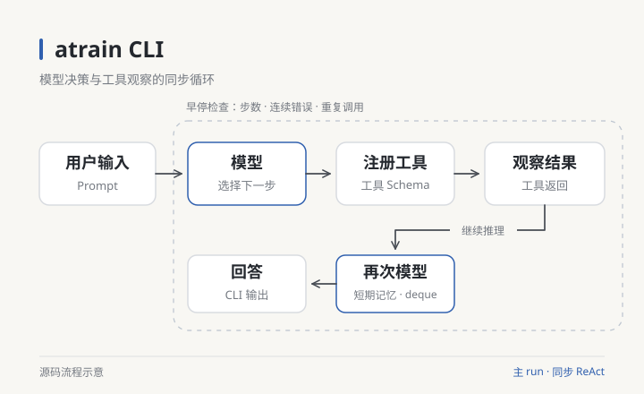

PERSONAL WEBSITE · 个人主页
石连勇
AI 应用 · C++ 开发
电子信息（计算机技术）硕士在读，本科财务管理背景。关注 AI 应用与 C++ 开发，通过项目实践探索模型工具协作、网络服务和桌面交互。
ABOUT ME
关于我
我叫石连勇，目前在西藏民族大学攻读电子信息（计算机技术）硕士，本科毕业于西南财经大学财务管理专业。我的关注方向是 AI 应用与 C++ 开发。
在 AI 方向，我独立编写 atrain CLI，从模型调用、工具注册和会话上下文入手，探索终端 Agent 的工作流程。在 C++ 方向，我通过 Reactor HTTP 服务器和 Qt 音乐播放器学习事件驱动、连接管理、界面交互与本地数据存储。
SELECTED PROJECTS
精选项目
围绕 AI 工具协作、C++ 网络服务与桌面交互的项目实践。
PROJECT DETAILS
设计与实现
网络连接、媒体状态与模型工具调用的主要实现。
atrain CLI
输入 → 模型决策 → 工具执行 → 观察结果 → 继续处理
atrain CLI
输入 → 模型决策 → 工具执行 → 观察结果 → 继续处理
模型与工具契约
BaseLLM 对接模型调用，ToolRegistry 汇集工具定义。Pydantic Schema 描述输入，让模型按约定选择工具并传入参数。
源码尚未公开同步 ReAct 循环
主流程采用同步 ReAct 调用：模型选择工具，执行结果回到会话上下文，再由模型继续处理。短期消息用于后续调用。
终端交互
使用 Rich 排版模型回复与终端提示。项目处于开发阶段，已有基础工具定义、短期会话与循环终止控制。
Reactor HTTP Server
监听 → 工作事件循环 → 请求解析 → 响应写回
Reactor HTTP Server
监听 → 工作事件循环 → 请求解析 → 响应写回
连接与循环
Acceptor 接收连接，工作 EventLoop 处理就绪事件；eventfd 负责跨线程唤醒，timerfd 为定时任务提供事件入口。
include/reactor/server.hpp ↗事件与连接管理
采用 LT 事件触发，围绕非阻塞读写、线程间任务投递、连接释放与超时机制组织服务端。
Qt 音乐播放器
导入 → 歌单 → 播放 → 歌词联动 → 本地保存
Qt 音乐播放器
导入 → 歌单 → 播放 → 歌词联动 → 本地保存
播放与交互
Qt Widgets 承载界面，QMediaPlayer 与 QAudioOutput 完成媒体播放与音频输出。信号与槽连接按钮、曲目和播放状态。
src/app/video_to_mp3_music.cpp ↗持久化与加载
通过 SQLite 保存曲目元数据、收藏与历史记录。托盘退出时写入本地数据库，下次启动读取曲目与列表。